L'auto-corrélateur se compose de 2 parties qui sont:
Un interféromètre de MICHELSON qui permet de faire interférer l'onde à analyser avec l'onde de référence pour cela on déplace un des miroirs d'une distance Lm1 qui dépend de la durée du pulse laser à analyser. Cette distance est de 150 microns pour un pulse de 1ps et de 15cm pour un pulse de 1ns (1000ps) Pour faire ces mesures j'ai réalisé un banc de mesure sur une table optique mobile permettant de la déplacer à coté du laser à mesurer.
La 2 ème partie est la détection du signal interférométrique au moyen de l'absorption à double photon dans un semi-conducteur GaP.
Dans une première série de mesures nous utilisons un "voice coil" qui actionne un support de miroir sur une glissière à bille.
Une 2ème série de mesures se fera avec un "voice coil" muni sur sa tige d'un rétro-réflecteur (tri-prisme)
Une 3ème série de mesures sera faite avec un miroir collé sur un transducteur piézo-électrique (PbTiO3) utilisé pour mesurer des pulses femtosecondes 10fs Lm1= 1.5 micron ! Le détecteur en régime absorption à 2 photons à une résolution inférieur à la femtoseconde !
Une 4ème série de mesure sera effectuée avec un miroir monté sur une coulisse de 150mm de course muni d'un moteur pas à pas ce qui permettra de mesurer des pulses entre 10fs et 1ns.
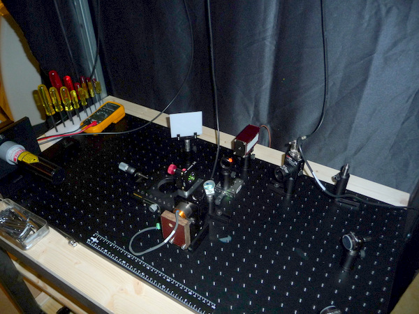
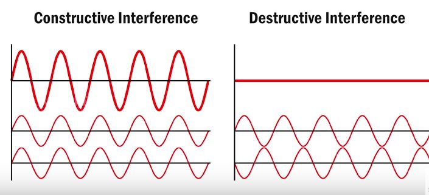
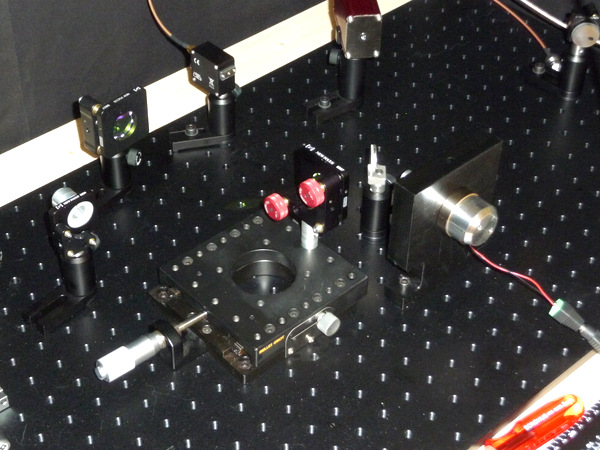
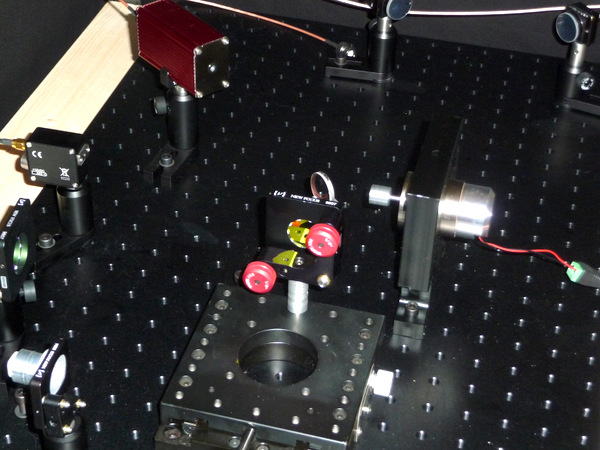
Voici 2 petites animations permettant de comprendre le fonctionnement de l'interféromètre de Michelson:
1ère série de mesures "voice coil" muni d'élastiques miroir plan
Voice coil avec sa glissière muni d'un miroir plan
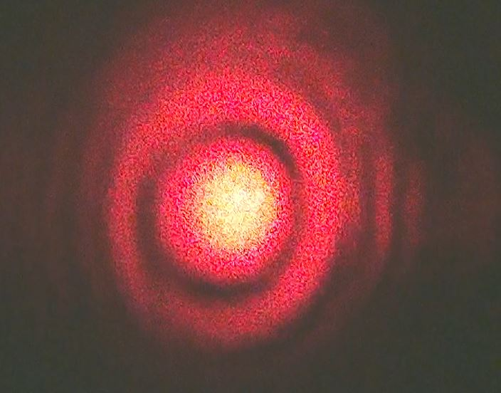
Image des anneaux d' interférences
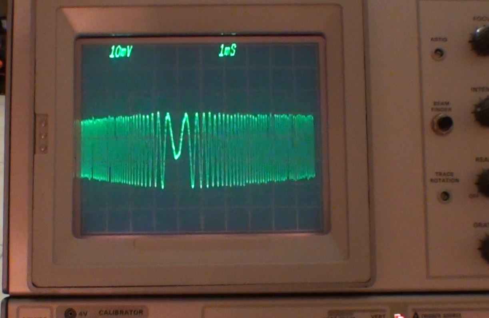
Signal électrique temporel délivré per la photodiode.
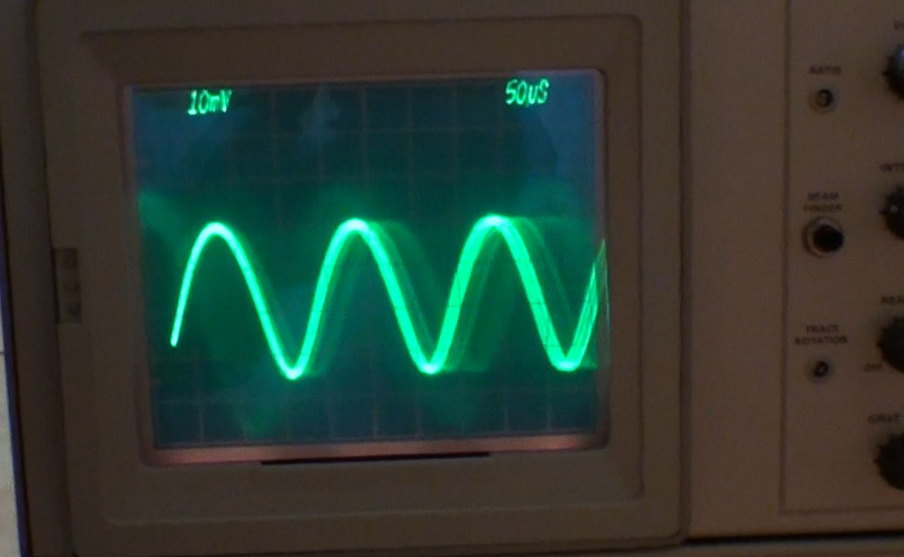
Signal de la photodiode en fonction du déplacement du miroir
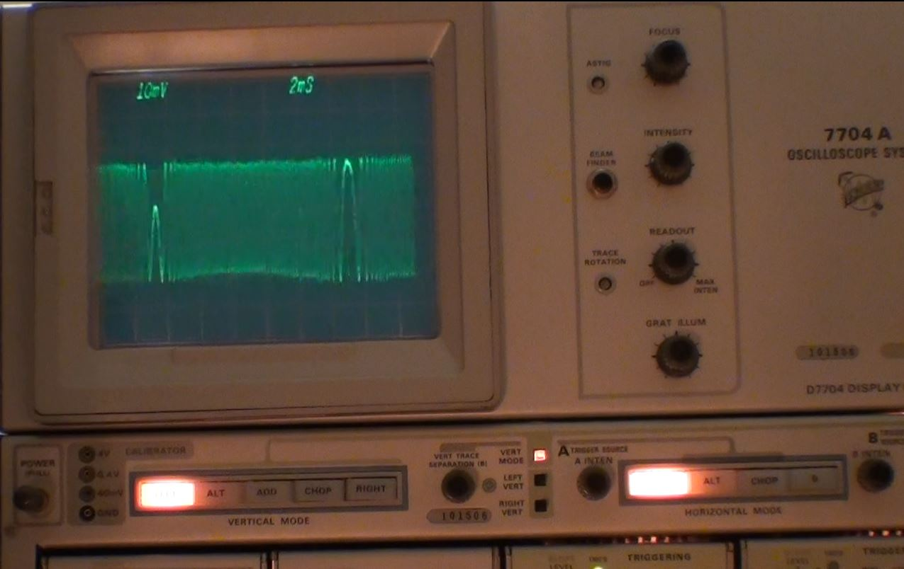
Voice coil à 300Hz
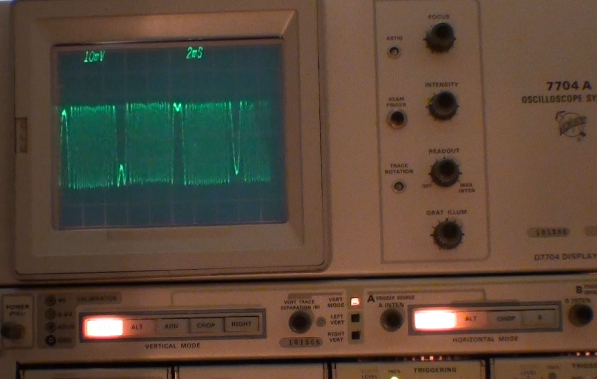
Voice coil à 500Hz
Voice coil à 1kHz
Video en HD
2ème série de mesures "voice coil" muni d'un tri-prisme.
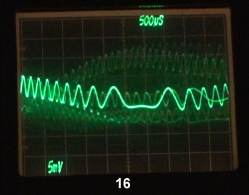
3ème série de mesure: déplacement manuel avec vis micrométrique et beam expender
Le miroir mobile est monté sur une coulisse de précision munie d'une vis micrométrique ce qui permet de déplacer un des miroirs manuellement.
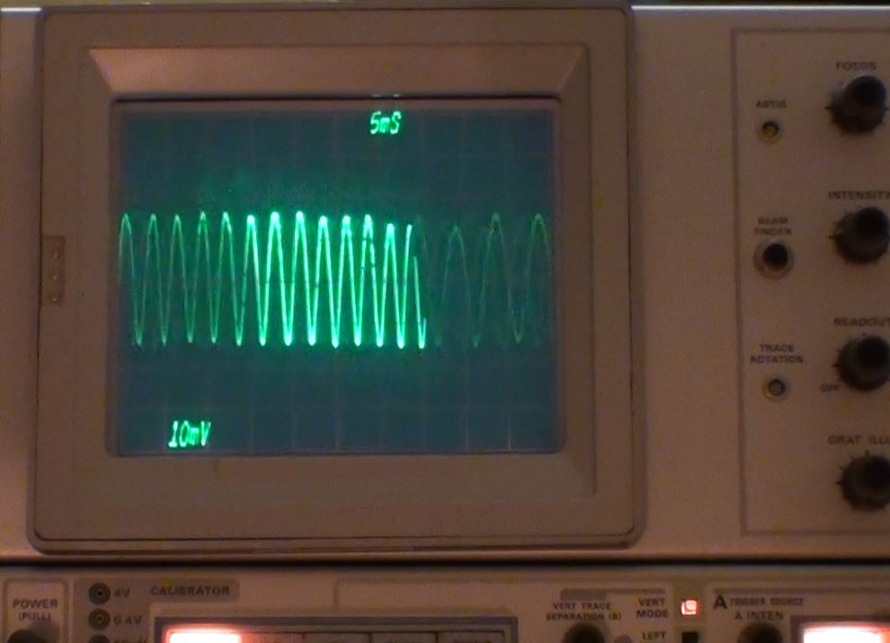
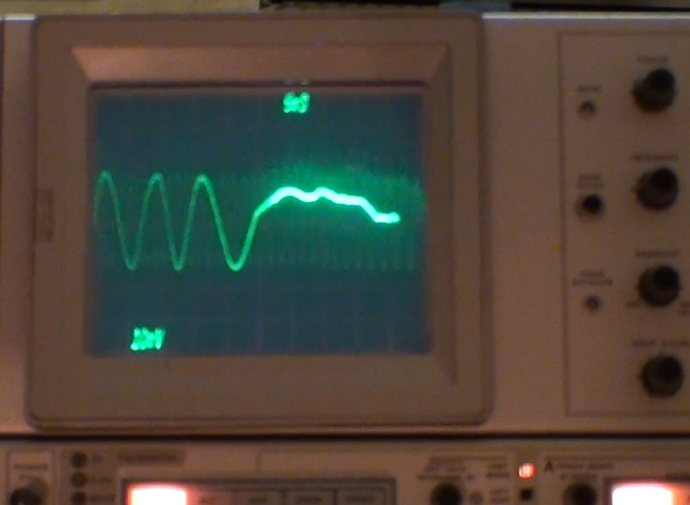
4ème série de mesure: Actuateur bimorphe piezo-électrique en PbTiO3.
Dans ce teste j'utilise une lame bimorphe en PZT collé par une goutte de colle silicone sur un coté seulement et un miroir aluminisé de 6mm de diamètre collé un milieu du bimorphe selon le schéma ci-dessous:
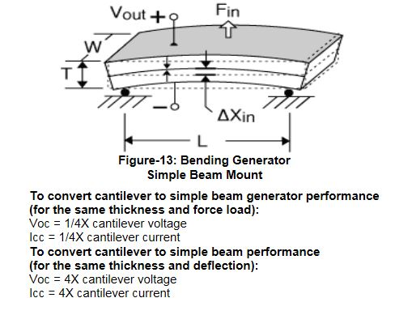
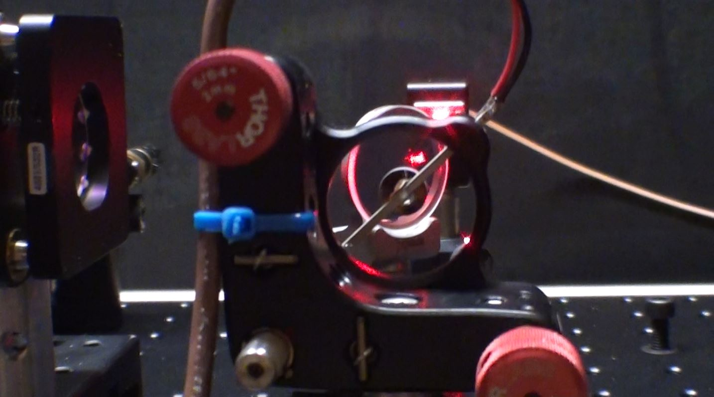
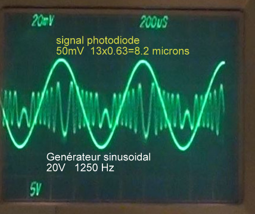
Analyse du signal: Le générateur donne un signal sinusoïdal de 20 volts à 1250 Hz. Le PZT bimorphe suit le signal avec un léger déphasage de l'ordre de 30°. Le signal d'interférence reçu sur la photodiode est de 50mV. Chaque sinusoïde correspond à une longueur d'onde du laser source ici un laser HeNe soit 623,8nm. On compte 13 sinusoïdes sur une période soit une distance 8.2 microns ! J'ai également fait des tests avec un signal triangulaire et carré. Le problème majeur avec les bimorphes est le résonance ce qui fait que pour certaines fréquences ils ne sont pas adaptés.